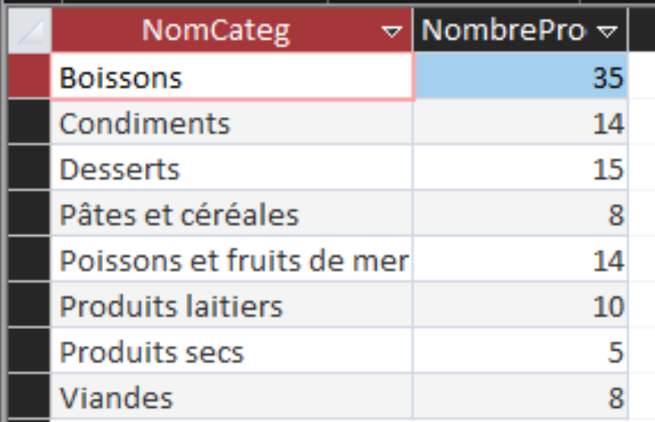

INDICATEUR 04
Étude de la répartition des produits dans les différentes catégories de KDou
SELECT Categorie.NomCateg, Count(Produit.RefProd) AS NombreProduits
FROM Categorie INNER JOIN Produit ON Categorie.CodeCateg = Produit.CodeCateg
GROUP BY Categorie.NomCateg
ORDER BY Categorie.NomCateg;
